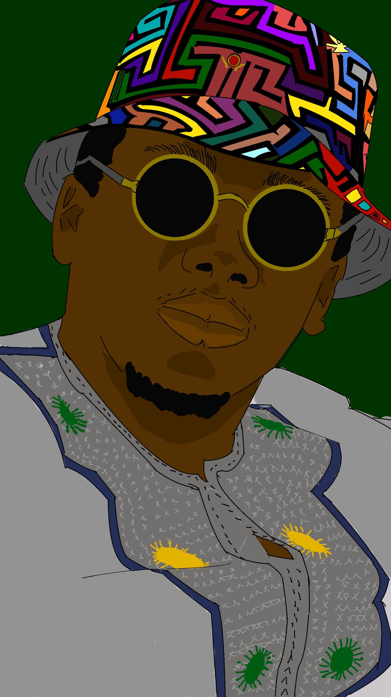

<nav id="sidebar" class="sidebar" style="font-size: 0.97rem;">
    <ul style="padding: 0.5rem 0;">
        <!-- Ajout de l'image -->
        <li class="sidebar-img" style="margin-bottom: 0.5rem;">
            <h1 class="logo" style="font-size: 1.1rem;"><a href="../../index.html">J.P.S.O</a></h1>
        </li> 
        
        <li><a class="nav-link scrollto active" href="../../index.html#hero">Accueil</a></li>
        <li><a class="nav-link scrollto" href="../../index.html#about">A propos</a></li>
        <li><a class="nav-link scrollto" href="../../index.html#about-bts-sio">BTS SIO</a></li>
        <li><a class="nav-link scrollto" href="../../index.html#resume">Parcours</a></li>
        <li><a class="nav-link" href="../../assets/documentation/stages.html" target="_blank">Epreuve E5</a></li>
        <li><a class="nav-link scrollto" href="../../index.html#skills">Compétences</a></li>
        <li><a class="nav-link scrollto" href="../../index.html#projets">Projets <br>& Certifications</a></li>
        <li><a class="nav-link scrollto" href="../../index.html#veille">Veille Technologique</a></li>
        <li><a class="nav-link scrollto" href="../../index.html#contact">Contact</a></li>
    </ul>
    <i class="bi bi-list mobile-nav-toggle"></i>
</nav>


